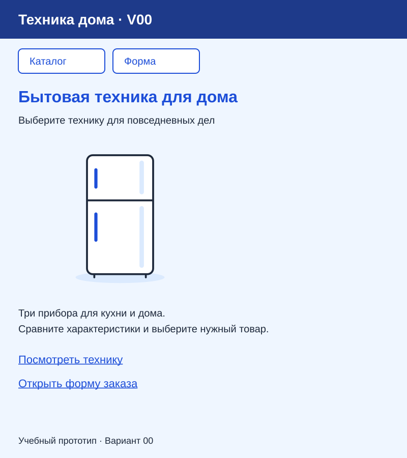
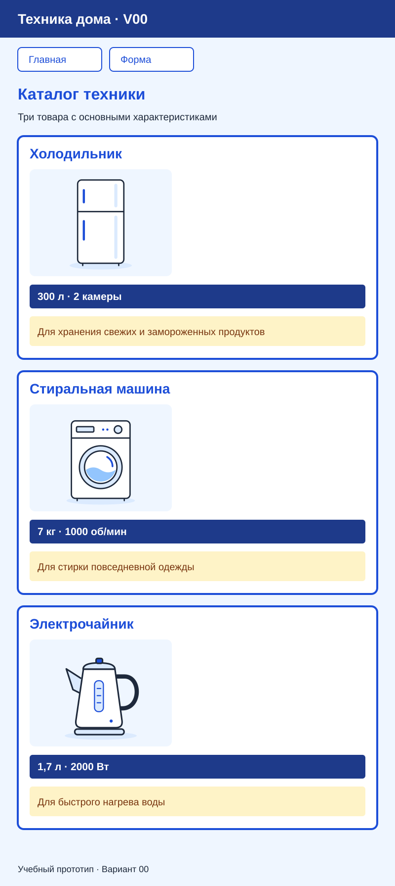
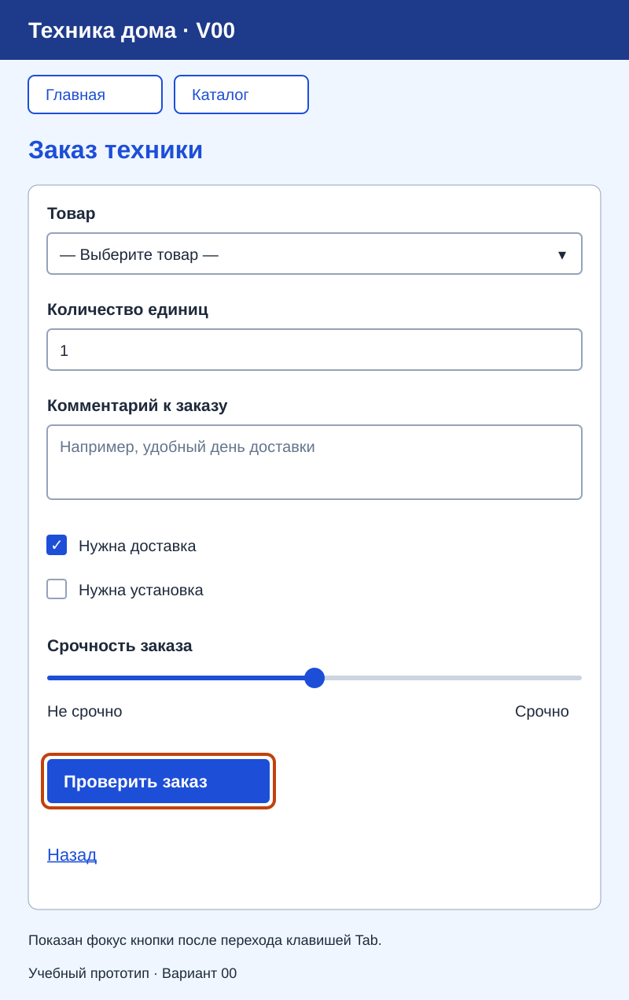

Вариант 00 — Техника дома
Это пример преподавателя. Студенты работают со своим номером, текстами и картинками. Новое оформление 00 пока согласуется; остальные варианты ещё не переработаны.
| Пара | Что сделать |
|---|---|
| 15 | Добавить классы, оформить основную часть и рамки карточек |
| 16 | Оформить карточки и форму; показать три страницы |
| 17 | Прочитать короткое объяснение и заполнить таблицы на бумаге |
Как выглядит результат практики
Это учебные изображения результата. Страницы нужно собрать из настоящих HTML-элементов, а не вставлять вместо них картинку. Проверяйте цвета, порядок и читаемость; совпадение размеров до пикселя не требуется.
В каждом меню только две ссылки на другие страницы: на главной — «Каталог» и «Форма»; в каталоге — «Главная» и «Форма»; в форме — «Главная» и «Каталог». Карточки пока идут сверху вниз.
Главная

Каталог

Форма

Оранжевый контур кнопки — фокус после нажатия Tab; постоянно показывать его не нужно. Вид флажков, списка и ползунка может отличаться в разных браузерах.
Стили примера 00
Дополните существующие правила общего style.css. У абзацев характеристики используйте класс specs, у описаний — description, у каждого article — card. Цветовые правила этого примера уточняют базовые образцы статьи пары 16.
| Что оформить | Селектор | Что задать |
|---|---|---|
| Фон и текст | body |
background-color: #EFF6FF; color: #1E293B |
| Шапка | header |
background-color: #1E3A8A; color: #FFFFFF — название приложения в обычном абзаце |
| Заголовки и обычные ссылки | h1, h2, a |
color: #1D4ED8 — подчёркивание ссылок сохранить |
| Ссылки меню | nav a |
Белый фон, синие текст и рамка; при наведении синий фон и белый текст |
| Карточка | .card |
background-color: #FFFFFF; border: 4px solid #1D4ED8; border-radius: 0.5rem |
| Характеристика | .card .specs |
background-color: #1E3A8A; color: #FFFFFF; padding: 0.5rem; font-weight: bold |
| Описание | .card .description |
background-color: #FEF3C7; color: #78350F; padding: 0.5rem |
| Кнопка | .request-form button |
background-color: #1D4ED8; color: #FFFFFF |
Размеры карточек и основного блока — из пары 15. Оформление полей, белая поверхность формы, изображения и фокус — из пары 16. Не задавайте цвета характеристик и описаний общим селектором p: иначе изменятся и другие абзацы.
Что показать после практики
| Действие | На что посмотреть |
|---|---|
| Открыть главную → каталог → форму | Переходы работают, меню без ссылки на саму себя |
| Сравнить каталог с картинкой | Три отдельные карточки; синие характеристики и жёлтые описания; картинки не растянуты |
Пройти форму клавишей Tab и отправить её |
Фокус заметен; пустой выбор запрещён, корректная отправка показывает параметры GET |
Отдельного отчёта по каждому шагу не нужно. Ниже — данные для сборки преподавательского примера.
Содержание главной страницы
| Элемент | Текст или изображение |
|---|---|
| Название приложения | Техника дома · V00 |
| Заголовок главной | Бытовая техника для дома |
| Короткое пояснение | Выберите технику для повседневных дел |
| Описание | Три прибора для кухни и дома. Сравните характеристики и выберите нужный товар. |
| Основное изображение | fridge.svg  |
| Название перехода к каталогу | Посмотреть технику |
| Название перехода к форме | Открыть форму заказа |
| Подпись в подвале | Учебный прототип · Вариант 00 |
На паре 13 главная сохраняет эти тексты, изображение и подпись. Ссылка «Посмотреть технику» ведёт на catalog.html; на паре 14 ссылка «Открыть форму заказа» ведёт на form.html.
Содержание каталога
Название — «Каталог техники». Пояснение — «Три товара с основными характеристиками».
| № | Название | Характеристика | Описание | Файл изображения |
|---|---|---|---|---|
| 1 | Холодильник | 300 л · 2 камеры | Для хранения свежих и замороженных продуктов | fridge.svg |
| 2 | Стиральная машина | 7 кг · 1000 об/мин | Для стирки повседневной одежды | washer.svg  |
| 3 | Электрочайник | 1,7 л · 2000 Вт | Для быстрого нагрева воды | kettle.svg  |
Скопируйте SVG-файлы в папку images веб-проекта по инструкции занятия. Это нейтральные учебные иллюстрации без брендов, созданные для данного примера; рисовать их студентам не требуется.
Используйте все три позиции в указанном порядке. Каждая позиция — отдельный article с названием в h2, изображением с содержательным alt, характеристикой и описанием. Блоки идут сверху вниз. Каталог содержит переход на главную; на паре 14 добавляется переход к форме.
Содержание формы — пара 14
Название формы — «Заказ техники». У каждого поля есть видимая подпись, связанная с элементом через for и id. Для отправляемых элементов задаются name.
| Подпись | Элемент и данные | Уточнение |
|---|---|---|
| Товар | select: Холодильник; Стиральная машина; Электрочайник |
Первая строка пустая; выбор обязателен |
| Количество единиц | Числовое поле | Минимум 1, шаг 1, начальное значение 1; поле обязательно |
| Комментарий к заказу | textarea |
Подсказка: «Например, удобный день доставки» |
| Нужна доставка | Независимый флажок | Выбран в начале |
| Нужна установка | Независимый флажок | Не выбран в начале |
| Срочность заказа | Ползунок от 1 до 5 | Начальное значение 3; края шкалы: «Не срочно» и «Срочно» |
Все шесть элементов таблицы входят в обязательный результат; порядок строк задаёт их расположение в примере 00. Флажки переключаются независимо.
Кнопка отправки — «Проверить заказ». Ссылка «Назад» ведёт на index.html. Из главной и каталога можно перейти к форме, из формы — вернуться на главную.
Отправка методом GET выполняется локально: страница перезагружается, а параметры видны в адресе. Сервер, хранение и обработка заказов отсутствуют. Настройка и объяснение — в статье 14.
Вернуться к своему варианту или занятиям курса.